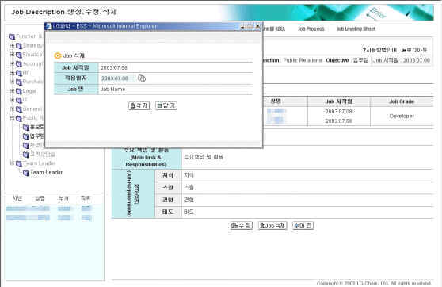

|
개요 | |
 |
개요 | |
| 수정하기 위해 선택한 Job의 Profile 조회를 통해 해당 Job의 수정할 사항 등을 확인하기 위한 조회화면 임. | ||
 |
화면사용법 및 유의사항 | |
| <그림 1. Job Profile 조회화면, 수정 및 Job 삭제 Button있는 화면> | ||
|
Job 삭제 | |
| 1) 동 화면 하단의 Job 삭제 Button을 Click하면 Job 삭제화면이 Pop-Up 으로 뜬다. | ||
| <그림 2. Job 삭제 화면> | ||
|  | ||
| 2) Job 삭제 Pop-Up 화면에서 삭제하려는 Job의 명칭을 정확히 확인한 후. | ||
| 3) 화면 하단의 삭제 Button을 Click하면 "Job과 관련한 모든 데이터가 삭제됩니다. 삭제하시겠습니까?" | ||
| 라는 경고 Message가 Display되며, click 시 해당 Job과 관련한 모든 내용이 삭제된다. | ||
| 4) 화면 하단의 닫기 Button을 Click하면 Pop-Up 창을 닫는다. | ||
|
Job Profile 수정 | |
| 1) 선택한 Job의 내용 수정을 위해서는 하단의 수정 Button을 Click하여 ‘수정’화면으로 이동한다. | ||